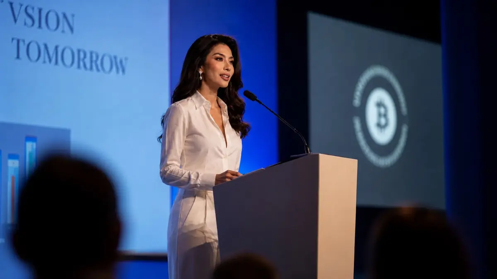
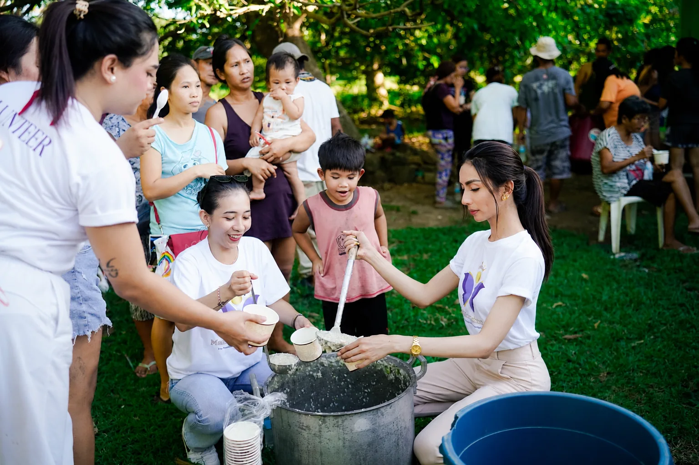

Social & Branding
For a founder or team preparing to introduce an offer or refresh its public presence. I can define the audience and message, write the launch copy, and turn it into a content plan your team can use.

 Francine Marie Bautista
Francine Marie BautistaStrategic communications & creative direction
I help founders and organizations decide what to say, then turn that decision into the campaign, website or editorial work people actually see.
Services
Bring me in before a launch, when a message isn’t landing, or when you need the strategy and the finished work to match.
For a founder or team preparing to introduce an offer or refresh its public presence. I can define the audience and message, write the launch copy, and turn it into a content plan your team can use.
For a statement, campaign or public-facing story. I develop the message, decide what evidence belongs in it, and direct how it comes together in writing, photography or production.
Portfolio
Two projects that show how I take an idea from strategy to launch.
View full portfolio
About
I’m a Filipina creative director and communications strategist. My background in teaching shapes how I work: make the idea clear first, then decide how people should see or hear it.
I lead an independent practice in the Philippines, working with brands, institutions and communities.
Publishing
Podcast
Conversations on life, leadership and creativity.

Book
Personal reflections on ambition, choices and relationships.
FMB&CO
Speaking & learning
Workshops, facilitation, and practical learning designed around the audience. This commitment to understanding also shapes Cognita Institute.

Community & service
Service begins with showing up.
Alongside our work in communications, education, and digital platforms, there is the work we do face to face: sharing a meal, lending a hand, and being present in our community.
Explore our community work


Photo archive
Open the calendar to request a date for an introductory call.

Professional curriculum vitae
Communications strategist, creative director & educator
I am a Filipina communications professional from Masinloc, Zambales. My work brings together brand strategy, public relations, creative production, training, and practical digital tools.
My experience spans training, remote professional work, and independent consulting. Today, I lead FMB&CO and SENZ, alongside initiatives in learning, publishing, and community information.

Current independent practice
FMB&CO / SENZ Strategic Communications & Digital Solutions
Independent engagements
Political and public-facing communication
Freelance experience
Executive support, career development, sales & acquisitions
2024
Training & facilitation
2021–2022
Optum / UnitedHealthcare
Northern Zambales College Inc.
University of the Philippines Baguio
Research, historical context, and source comparison.
Tourism, hospitality, events, culture, and audience experience.
Founder-led learning initiative focused on practical AI education and capability development.
View instituteFounder and editorial direction for Filipino Media Bulletin, with an emphasis on sources, context, and clear explanation.
View editorial workFounder and independent builder of a community platform spanning local information, culture, and language preservation.
View case studyAuthor of a book on ambition, boundaries, relationships, work, and personal choices.
View bookCommunity outreach, local history, tourism, and Sambal Tina language preservation are recurring areas of my work. I am interested in how education and communication can make local knowledge easier to access and use.
For professional enquiries: withlovefmb@gmail.com